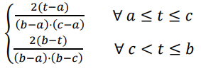
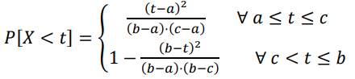
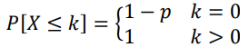

2. Distribuciones de probabilidad#
En el proceso de modelamiento de sistemas que presentan un comportamiento aleatorio utilizamos dos familias de variables aleatorias para modelar la probabilidad de ocurrencia de los eventos. Estas son las variables aleatorias continuas y las variables aleatorias discretas.
2.1. Variables aleatorias continuas#
Nos interesa utilizar variables aleatorias continuas para modelar los tiempos de ocurrencia de eventos de interés en el sistema. Por esto, el rango de las distribuciones continuas a utilizar tiene como valor mínimo un número no-negativo. Entre las más utilizadas están la distribución Exponencial, Uniforme, Lognormal, Triangular y Erlang. A continuación, presentamos las características y propiedades más relevantes de las distribuciones listadas anteriormente.
2.1.1. Distribución Exponencial#
Parámetro: \(\lambda\), que indica la tasa de ocurrencia de eventos por unidad de tiempo. Las unidades de medida de este parámetro son de \(\frac{1}{tiempo}\); por ejemplo: \(segundos^{−1}\), \(horas^{−1}\),\(meses^{−1}\).
Dominio: [0,∞) |
Función de densidad: \(\lambda e^{-\lambda\cdot t}, t\ge 0\) |
|
Valor Esperado: \(E[X]=\frac{1}{\lambda}\) |
Función de densidad de probabilidad acumulada: \(P[X<t]=1- e^{-\lambda\cdot t} \) |
|
Varianza: \(Var[X]=\frac{1}{\lambda ^{2}} \) |
Propiedades: La distribución de probabilidad exponencial cumple con la propiedad de no memoria, definida a continuación.
2.1.2. Distribución Uniforme Continua#
Parámetros: \(a\) (mínimo) y \(b\) (máximo), que indican los límites entre los que estarán definidos los valores de la variable aleatoria.
Dominio: \([a,b], 0\leq a < b\) |
Función de densidad: \(\frac{1}{(b-a)}, a\leq t \leq b\) |
|
Valor Esperado: \(E[X]=\frac{a+b}{2}\) |
Función de densidad de probabilidad acumulada: \(P[X<t]= \frac{t-a}{b-a} \forall a\leq t \leq b\) |
|
Varianza: \(Var[X]=\frac{(b-a)^{2}}{12}\) |
2.1.3. Distribución Lognormal#
Se dice que \(X\) es una variable aleatoria que sigue una distribución de probabilidad lognormal si el logaritmo de \(X\) es una variable siguen una distribución normal con parámetros \(\mu\) y \(\\sigma\). Estos dos valores también son los parámetros de la distribución lognormal.
Dominio: \((0,∞)\) |
Función de densidad: \( \frac{1}{t\cdot \sigma \sqrt{2\pi}} e^{\frac{-(ln(t)-\mu)^{2}}{2\sigma ^{2}}}\) |
|
Valor Esperado: \(E[X]=e^{\mu+\frac{\sigma^{2}}{2}}\) |
Función de densidad de probabilidad acumulada: No tiene forma explícita |
|
Varianza: \(Var[X]=(e^{\sigma^{2}}-1)\cdot (e^{2\cdot \mu +\sigma^{2}})\) |
2.1.4. Distribución Triangular#
Parámetros: \(a\) (mínimo), \(b\) (máximo) y \(c\) (valor más probable).
Dominio: \([a,b], 0\leq a < b\) |
Función de densidad:  |
|
Valor Esperado: \(E[X]= \frac{a+b+c}{3}\) |
Función de densidad de probabilidad acumulada:  |
|
Varianza: \(Var[X]=\frac{a^{2}+b^{2}+c^{2}-ab-ac-bc}{18}\) |
A continuación, se presenta el histograma de frecuencias para una variable aleatoria que sigue una distribución de probabilidad triangular con parámetros = 0, = 60 y = 20.

2.1.5. Distribución Erlang#
Se define \(X\) como una variable aleatoria que sigue una distribución Erlang si constituye una suma de K variables aleatorias distribuidas exponencialmente con el mismo parámetro , y estas son independientes entre sí. Los parámetros de la distribución Erlang son (cantidad de variables aleatorias exponenciales que se suman) y (parámetro de cada una de esas variables aleatorias).
Sea \(Y_{i}\) un conjunto de variables aleatoria distribuidas exponencialmente con parámetro \(\lambda\). \(Y_{i}\) son iid (independientes e idénticamente distribuidas).
En caso en que \(Y_{i}\) no sean variables aleatorias iid, la distribución de probabilidad de \(X\) no será Erlang.
Dominio: \([0,∞)\) |
Función de densidad: \(\lambda e^{-\lambda\cdot t} \cdot \frac{(\lambda\cdot t)^{k-1}}{(k-1)!}\) |
|
Valor Esperado: \(E[X]= \frac{k}{\lambda }\) |
Función de densidad de probabilidad acumulada: \(P[X<t]=1- \sum_{j=0}^{k-1} e^{-\lambda\cdot t}\frac{(\lambda t)^{j}}{j!}\) |
|
Varianza: \(Var[X]=\frac{k}{\lambda^{2} }\) |
2.2. Variables aleatorias discretas#
Nos interesa utilizar variables aleatorias discretas para modelar la probabilidad de ocurrencia de eventos de interés en el sistema. Entre las distribuciones de probabilidad discretas más utilizadas están la Poisson, Bernoulli, Geométrica, Binomial y Uniforme. A continuación, presentamos las características más relevantes de las distribuciones anteriormente mencionadas.
2.2.1. Distribución Poisson#
Una variable aleatoria que siga una distribución de Poisson nos permite conocer la probabilidad que ocurra una cantidad determinada de eventos durante un período de tiempo definido \(t\). De este modo, el parámetro de esta distribución es \(\lambda\), que indica la tasa de ocurrencia de eventos por unidad de tiempo. Las unidades de medida de \(\lambda\) son de \frac{1}{tiempo}; por ejemplo: \(segundos^{−1}\), \(horas^{−1}\),\(meses^{−1}\).
Dominio: \([0,1,2,3,4,\ldots,\infty)\) |
Función de densidad: \(P[X=k]=\frac{e^{-\lambda}\cdot \lambda^{k}}{k!}\) |
|
Valor Esperado: \(E[X]= \lambda\) |
Función de densidad de probabilidad acumulada: No tiene forma explícita |
|
Varianza: \(Var[X]=\lambda\) |
Relación con la distribución Exponencial
Una variable aleatoria Poisson nos permite caracterizar el número de eventos que ocurren en un tiempo definido \(t\). Se sabe que el tiempo de ocurrencia entre cualquier par de eventos consecutivos sigue una distribución Exponencial con parámetro \(\lambda\), igual al de la distribución Poisson.
2.2.2. Distribución Bernoulli#
Sea \(X\) variable aleatoria que mide el resultado de un único experimento con dos posibles resultados: éxito (1) o fracaso (0). Esta variable aleatoria sigue una distribución de probabilidad Bernoulli. Por ende, el único parámetro es \(p\), que indica la probabilidad de éxito del experimento.
Dominio: \(\text{{0,1}}\) |
Función de densidad: \(P[X=k]= p^{k}\cdot (1-p)^{1-k}, k \in \text{{0,1}}\) |
|
Valor Esperado: \(E[X]= p\) |
Función de densidad de probabilidad acumulada: |
|
Varianza: \(Var[X]= p(1-p)\) |
2.2.3. Distribución Geométrica#
Sea \(X\) una variable aleatoria que cuenta el número de intentos necesarios hasta obtener el primer éxito, de un fenómeno aleatorio con dos posibles resultados: éxito o fracaso. Dicha variable aleatoria sigue una distribución de probabilidad Geométrica.
Parámetro: \(p\) , que indica la probabilidad que en cada uno de los intentos el resultado sea exitoso.
Dominio: \(\{1,2,3,\ldots,\infty\}\) |
Función de densidad: \(P[X=k]= p\cdot (1-p)^{k-1}, k \in \{1,2,3,\ldots,\infty\}\) |
|
Valor Esperado: \(E[X]= \frac{1}{p}\) |
Función de densidad de probabilidad acumulada: \(P[X\leq k]=1-(1-p)^{k}, k \in \{1,2,3,\ldots,\infty\}\) |
|
Varianza: \(Var[X]= \frac{(1-p)}{p^{2}}\) |
Propiedades: La función Geométrica cumple con la propiedad de no memoria, definida a continuación:
2.2.4. Distribución Binomial#
Sea \(X\) una variable aleatoria que cuenta el número de éxitos en una secuencia de \(n\) intentos independientes y aleatorios con dos posibles resultados: éxito o fracaso. Dicha variable aleatoria sigue una distribución de probabilidad Binomial.
Parámetros: \(n\) (número de intentos), \(p\) (probabilidad de éxito en cada uno de los intentos).
Dominio: \(\{0,1,2,\ldots,n\}\) |
Función de densidad: \(P[X=k]=\binom{n}{k}p^{k}\cdot (1-p)^{n-k}, k \in \{0,1,2,\ldots,n\} \) |
|
Valor Esperado: \(E[X]= n\cdot p\) |
Función de densidad de probabilidad acumulada: No tiene forma explícita |
|
Varianza: \(Var[X]= n\cdot p \cdot (1-p)\) |
2.2.5. Distribución Binomial Negativa#
Sea \(X\) una variable aleatoria que cuenta el número de intentos necesarios para el obtener k-ésimo éxito (por primera vez). Cada uno de los intentos es un ensayo de Bernoulli independiente del resto, en donde hay dos posibles resultados: éxito o fracaso. Dicha variable aleatoria sigue una distribución de probabilidad Binomial Negativa.
Parámetros: \(k\) (número de éxito de interés), \(p\) (probabilidad de éxito de cada uno de los intentos).
Dominio: \(\{k,k+1,k+2,\ldots,\infty\}\) |
Función de densidad: \(P[X=m]=\binom{m-1}{m-k}(p)^{k}\cdot (1-p)^{m-k}, m\ge k \) |
|
Valor Esperado: \(E[X]= \frac{k}{p}\) |
Función de densidad de probabilidad acumulada: No tiene forma explícita |
|
Varianza: \(Var[X]= \frac{k\cdot (1-p)}{p^{2}}\) |
2.2.6. Distribución Uniforme Discreta#
Sea \(X\) una variable aleatoria discreta que sigue la distribución uniforme. Se conoce que la probabilidad de ocurrencia de cada uno de los valores de su dominio finito es igual. Se define \(x_{i} \forall i\in \{1,2,\ldots, n\}\) como diferentes realizaciones de la variable aleatoria \(X\).
Parámetros: \(a\) (mínimo) y \(b\) (máximo), que indican los límites entre los cuales estará definida la variable aleatoria.
Dominio: \(\{a+1,a+2,\ldots,b-1,b\}\) |
Función de densidad: \(P[X=k]=\frac{1}{n}\) |
|
Valor Esperado: \(E[X]= \frac{1}{n} \sum_{i=1}^{n} x_{i}\) |
Función de densidad de probabilidad acumulada: \(P[X\leq k]=\frac{1}{n}\sum_{a\leq j\leq k} 1\) |
|
Varianza: \(Var[X]= \frac{1}{n} \sum_{i=1}^{n} (x_{i})^{2}-(E[X])^{2}\) |